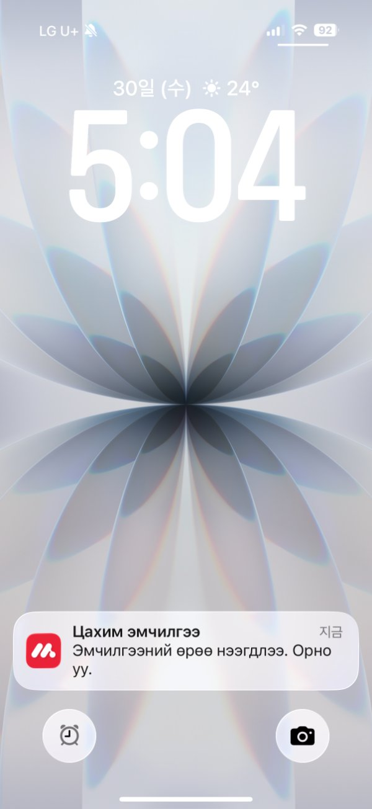
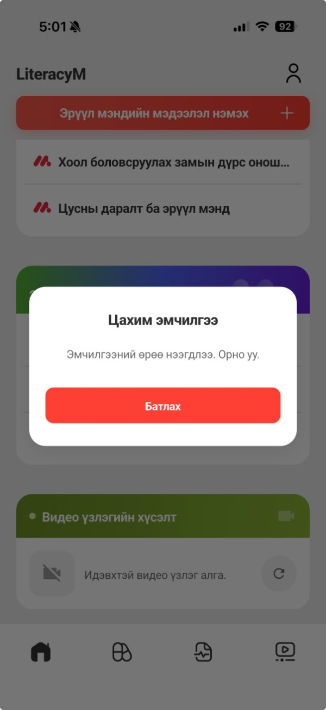
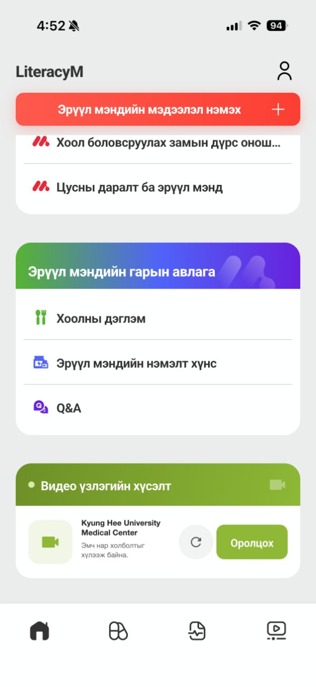
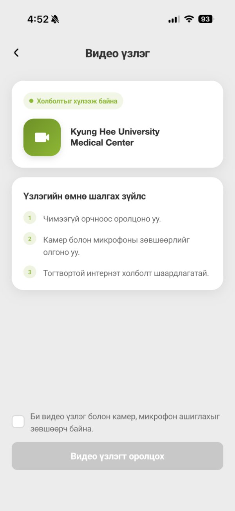
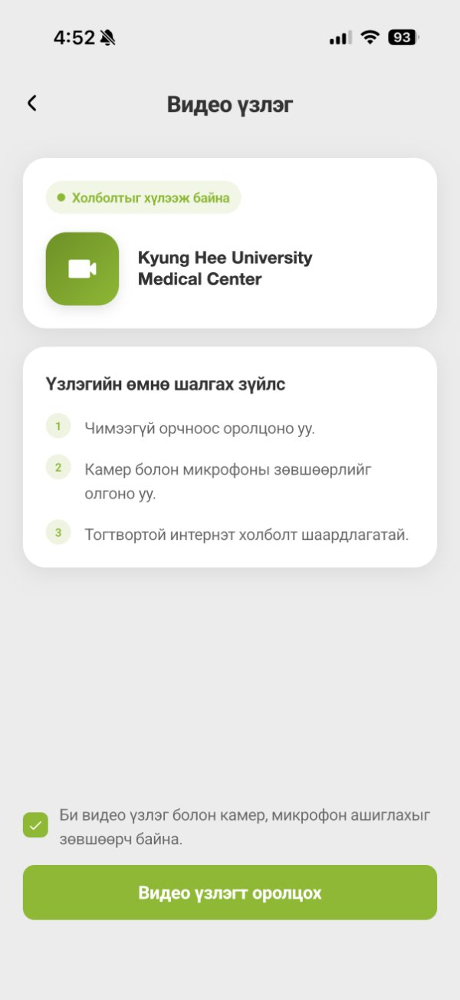
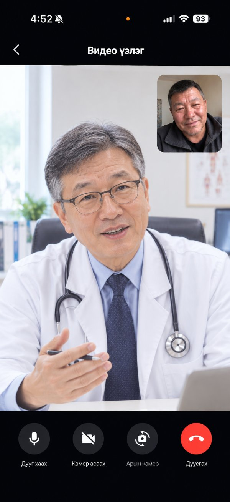
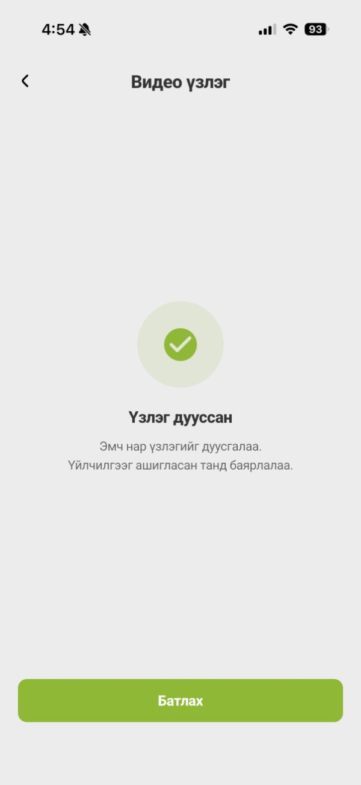

Видео үзлэгт оролцох заавар
Үзлэгийн өмнө
- Чимээгүй, гэрэл сайтай орчинд байна уу.
- Камер болон микрофоны зөвшөөрлийг олгоно уу.
- Wi‑Fi эсвэл тогтвортой интернэт ашиглана уу.
- Утасны цэнэгээ хангалттай эсэхийг шалгана уу.
- Холболтын асуудал гарвал апп-аа хааж дахин нээнэ үү.
1
Мэдэгдэл хүлээн авч оролцох



Эмч эмчилгээний өрөөг нээхэд утсанд «Цахим эмчилгээ» мэдэгдэл ирнэ. Мэдэгдлийг дарах эсвэл апп доторх цонхон дээр «Батлах» товчийг дарахад шууд зөвшөөрлийн хуудас руу шилжинэ. Мэдэгдлийг алдсан бол нүүр хуудасны «Видео үзлэгийн хүсэлт» хэсгийн «Оролцох» товчийг дарна уу.
2
Зөвшөөрөл өгөх


Шалгах зүйлсийг уншаад доод талын нүдийг чагтлана уу. Товч ногоон болж идэвхжсэний дараа «Видео үзлэгт оролцох» товчийг дарна уу.
3
Эмчтэй ярилцах

Доод товчнууд: дуу хаах, камер асаах/унтраах, камер солих, улаан товчоор дуусгах.
4
Үзлэг дуусах

Эмч үзлэгийг дуусгасны дараа «Батлах» товчийг дарж нүүр хуудас руу буцна уу.